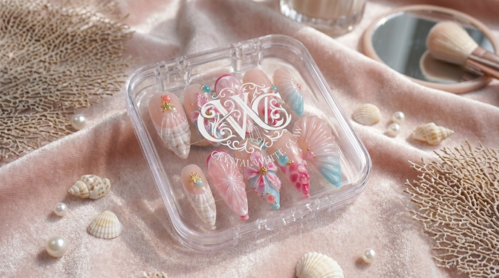
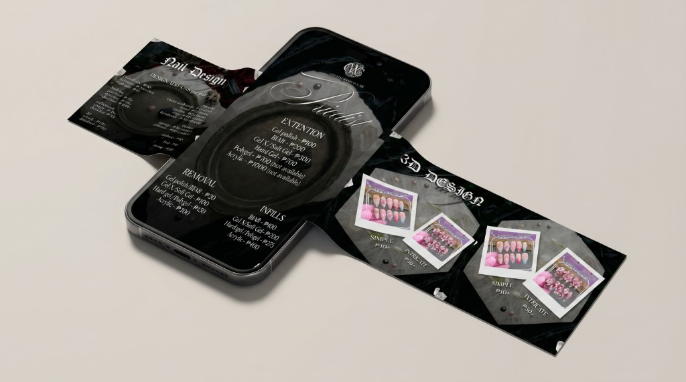

Transcending the Saturated Beverage Shelf: Creating a Must-Have Lifestyle Accessory
Introducing a specialized product line like "Crystal White Claw" into a highly saturated beverage market requires a visual identity that immediately captures attention while feeling distinctly premium. The objective was to build a comprehensive, aesthetic-driven brand ecosystem that translates seamlessly from physical product packaging to highly engaging social media touchpoints.
The central strategic hurdle lay in creating a cohesive vibe that appeals directly to a trend-conscious, lifestyle-focused demographic—ensuring the brand felt less like a standard canned beverage and more like a statement lifestyle accessory.
Market Saturation & Visual Noise
Overcoming repetitive canned drink tropes by establishing a distinctive luxury monogram language that commands immediate shelf authority and social feed recognition.
Demographic Resonance
Designing for Gen Z and millennial consumers who prioritize aesthetics, organic social sharing, and curated personal identity over standard advertising claims.
360-Degree Brand Architecture: Tactile Packaging Meets Social-First Fashion
I designed a complete, 360-degree visual identity system that bridged physical product design with digital marketing. Starting with the core aesthetic, I developed sleek, modern packaging mockups to establish the premium "Crystal" branding.
To push the campaign beyond traditional marketing, I integrated lifestyle elements by creating custom nail art mockups, visually linking the beverage to personal style and fashion—a highly shareable, aesthetic-driven concept tailored for Gen Z and millennial audiences. Finally, I translated this cohesive visual language into dynamic, visually rich Instagram carousels engineered to tell the brand's story, drive user engagement, and build digital momentum.
Prestige Monogram & Packaging
Engineered luxury shopping bag mockups, geometric repeat patterns, and metallic-foil print specifications establishing an unmistakable luxury aura.
Hyper-Niche Lifestyle Integration
Pioneered custom nail art visual mockups that connect beverage consumption with personal grooming and fashion, creating organic photo opportunities.
Editorial Social Carousels
Crafted narrative-driven Instagram slide sequences with seamless panoramic transitions that drive swipe completion rates and save/share actions.
Omnichannel Brand Governance
Maintained strict typographic consistency and high-contrast color palettes ensuring flawless reproduction across physical print and mobile feeds.
Cohesive Brand Architecture: From Vector Monogram to Handcrafted Nail Art
Both the full brand presentation board and the custom press-on nail collection share harmonious vertical proportions, ensuring viewers can inspect the complete typographic system alongside the tactile 3D nail details without any cropping.
Social-First Touchpoints: 3D Smartphone Price Guides & Story Carousels
Engineered multi-slide social carousels and digital price menus designed to capture swipe-through momentum on Instagram and TikTok. The typography and layout structure combine gothic title accents with modern editorial hierarchy.

Modular Service Pricing
Clean typography for gel polish, extensions, and removal tiers formatted for fast legibility on 6-inch mobile screens.
Polaroid Visual Anchors
High-contrast polaroid frames displaying simple vs. intricate 3D nail variations to guide customer purchase decisions.
Prestige Retail Bag Packaging & Metallic Foil Specifications
The physical packaging architecture utilizes luxury heavyweight paperboard, custom braided ribbon handles, and deep debossed monogram foil stamping designed for high-end boutique and VIP event gift distribution.

A Fully Realized, Culturally Relevant Brand Campaign Ready for Viral Growth
The resulting suite of assets delivered a fully realized, culturally relevant brand campaign. By combining high-fidelity packaging design with hyper-niche lifestyle marketing and social-first content, the project established a cohesive, modern visual identity.
This multi-touchpoint approach ensured the brand was not only ready for physical production but optimized for viral, aesthetic-driven sharing across modern social platforms, proving how strategic design transforms a standard product into a cultural icon.